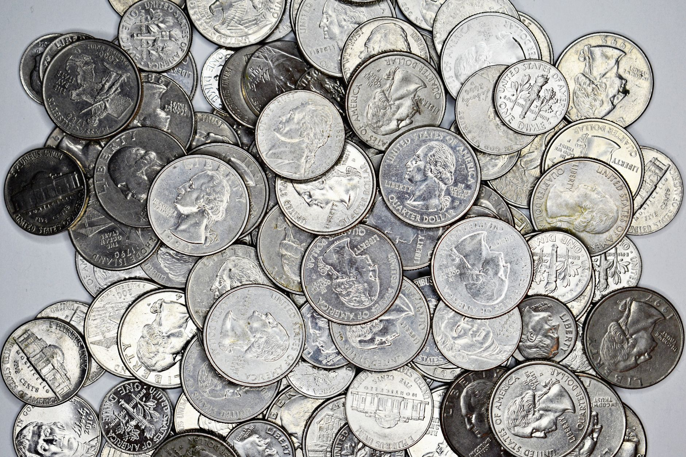

Are you looking to enter the world of silver investing, and are you curious about the unique opportunities presented by junk silver coins from before 1965? At Fused Distribution, we stock a diverse collection of these historical silver pieces, offering a tangible way for retail investors to participate in the silver market. We recommend exploring junk silver coins as a compelling entry point into precious metals, especially given the current market dynamics. The silver market is showing significant strength, with silver hitting a nominal all-time high in January 2026, making junk silver coins worth multiples of their face value (Source: Finance Magnates). Also, retail investor sentiment is strong, as 57% of those surveyed expect silver to trade above $100/oz in 2026, which fuels demand for physical silver, including junk bags (Source: Kitco News).

This article will guide you through what junk silver coins are, why they hold value, and how they fit into a broader silver investment strategy. We will look at the specific characteristics of pre-1965 coins, discuss the premiums associated with bulk junk silver bags, and explore how this investment fits alongside other silver-related assets. We will also look at the current industrial demand pressures affecting the market and how these factors influence the long term outlook for physical silver. Prepare to learn how to make an informed decision about adding these unique assets to your portfolio.

Why Pre-1965 Junk Silver Coins Matter Now
Why Pre-1965 Junk Silver Coins Matter Now
We stock junk silver coins because they represent a unique and tangible piece of silver history. These pre-1965 coins hold significant intrinsic value, especially as the market continues to favor physical silver. The recent surge in demand is undeniable; silver hit a nominal all-time high in January 2026, making junk silver coins worth multiples of face value (Source: Finance Magnates).
Retail interest is also booming. A significant majority of retail investors surveyed anticipate silver trading above $100/oz in 2026, which fuels the demand for physical silver, including junk bags (Source: Kitco News). Also, the global industrial demand for silver has reached a record high, tightening the supply for physical coins (Source: The Silver Institute).
We recommend considering junk silver because bulk bags typically carry premiums of 10 to 20 percent over the melt value for mixed 90 percent coins (Source: Money Metals Exchange). The strong retail appetite is further evidenced by the success of the 2025-W Proof Silver Eagle, showing a clear appetite for both investment silver and junk silver (Source: CoinNews).
Understanding the Value Drivers of Junk Silver Coins
Understanding the Value Drivers of Junk Silver Coins
At Fused Distribution, we believe junk silver coins from pre-1965 represent a compelling entry point into silver investing. These coins offer a tangible piece of history combined with the potential for significant appreciation. We stock these items because they tap into a specific market segment driven by both historical value and current investor appetite.
The demand for physical silver, including junk bags, is clearly increasing. For instance, 57% of retail investors surveyed expect silver to trade above $100/oz in 2026, which fuels the interest in these assets (Source: Kitco News). Also, bulk junk silver bags often carry premiums of 10 to 20 percent over the melt value for mixed 90 percent coins (Source: Money Metals Exchange).
We see this demand supported by broader market trends. Global silver industrial demand has hit a record in 2024, tightening the supply for physical coins (Source: The Silver Institute). While industrial use is strong, the retail appetite for coins remains reliable, as evidenced by the strong performance of items like the 2025-W Proof Silver Eagle (Source: CoinNews). We recommend exploring junk silver as a way to diversify your precious metals portfolio.
Market Demand for Physical Silver and Junk Bags
Market Demand for Physical Silver and Junk Bags
We stock a growing interest in pre-1965 US silver, and the market demand for physical silver, including junk bags, is heating up. We recommend exploring this sector for investors looking for tangible assets. Silver has recently reached a nominal all-time high, with junk silver coins now worth multiples of their face value (Source: Finance Magnates). This surge in interest is supported by strong retail sentiment; 57% of retail investors surveyed anticipate silver trading above $100/oz in 2026, which fuels demand for physical silver (Source: Kitco News).
The supply side is also tightening, as global industrial demand for silver hit a record in 2024, creating pressure on the market for physical coins (Source: The Silver Institute). Also, the 2025-W Proof Silver Eagle demonstrated significant retail appetite, showing strong interest alongside junk silver (Source: CoinNews).
For those interested in maximizing returns, we note that bulk junk silver bags often carry premiums of 10 to 20 percent over the melt value for mixed 90 percent coins (Source: Money Metals Exchange). We encourage you to look into how these pre-1965 coins fit into your investment strategy.
Comparing Silver Demand and Industrial Usage
Comparing Silver Demand and Industrial Usage
We stock a diverse range of pre-1965 US silver coins, and understanding the current market dynamics is key to making an informed investment. The demand for silver is currently surging, driven by both investor appetite and significant industrial needs. We see silver hitting nominal all-time highs, meaning junk silver coins can trade at multiples of their face value, as noted by Finance Magnates.
Retail interest is particularly strong; a significant majority of retail investors surveyed anticipate silver trading above $100 per ounce in 2026, fueling demand for physical silver, including junk bags (Source: Kitco News). Also, global industrial usage has reached a record high in 2024, tightening the supply for physical coins (Source: The Silver Institute). While solar PV consumes a substantial portion of industrial demand, investor interest remains reliable, evidenced by the 2025-W Proof Silver Eagle being the US Mint's top coin (Source: CoinNews).
We recommend considering junk silver coins as a tangible way to participate in this growing silver market. Bulk junk silver bags often carry premiums of 10 to 20 percent over melt value for mixed 90 percent coins (Source: Money Metals Exchange). This combination of strong investor sentiment and industrial necessity presents a compelling opportunity for investors looking at pre-1965 silver.
Silver's Role in Modern Energy Markets
Silver's Role in Modern Energy Markets
We stock junk silver coins as a tangible way for you to participate in the precious metals market. The current environment presents unique opportunities for investors looking at pre-1965 US silver. We see silver hitting a nominal all-time high in January 2026, meaning these coins can trade at multiples of their face value.
Demand for physical silver is surging. A significant 57 percent of retail investors surveyed anticipate silver trading above $100 per ounce in 2026, which fuels the need for physical assets like junk bags. Also, global industrial demand for silver reached a record in 2024, tightening the supply of physical coins.
We recommend considering junk silver bags, which often carry premiums of 10 to 20 percent over the melt value for mixed 90 percent coins. This is supported by strong retail appetite, evidenced by the 2025-W Proof Silver Eagle being the US Mint's bestselling coin. Investing in these coins offers exposure to both commodity cycles and tangible metal value. For more on this, see Johnson Matthee Silver Bars Guide.
Premium for Bulk Junk Silver Bags
We stock a diverse range of pre-1965 US silver coins, offering you a tangible way to invest in precious metals. As silver has recently hit a nominal all-time high, junk silver coins are proving to be a compelling asset class, with some pieces now worth multiples of their face value (Source: Finance Magnates). We recommend exploring these coins for investors looking for tangible assets.
The demand for physical silver is surging, with 57% of retail investors surveyed expecting silver to trade above $100/oz in 2026, which fuels interest in physical holdings like our bulk junk silver bags (Source: Kitco News). Also, global industrial demand has reached a record high, tightening the supply for physical coins (Source: The Silver Institute).
When considering bulk junk silver bags, we note that they typically carry premiums of 10 to 20 percent over the melt value for mixed 90 percent coins (Source: Money Metals Exchange). The strong retail appetite is also evident, highlighted by the 2025-W Proof Silver Eagle being the US Mint's bestselling coin (Source: CoinNews).
Identifying High-Potential Pre-1965 Coin Types
Identifying High-Potential Pre-1965 Coin Types
We stock a diverse range of pre-1965 US silver coins that represent a compelling entry point into silver investing. Understanding the specific types of coins you are looking at is crucial for maximizing your potential returns. We recommend focusing on coins from periods before the major modern minting shifts, as these often carry unique historical value and collectible appeal.
We see significant investor interest in these older pieces. For instance, the 2025-W Proof Silver Eagle has demonstrated strong retail silver appetite, indicating a growing demand for both premium and junk silver. Also, bulk junk silver bags typically carry premiums of 10 to 20 percent over melt for mixed 90 percent coins, offering an immediate margin opportunity.
The current market shows strong momentum, with silver hitting a nominal all-time high in January 2026, making junk silver coins worth multiples of face value. With global industrial demand hitting a record and retail investors expecting silver to trade above $100/oz in 2026, these pre-1965 coins are positioned well within a rapidly expanding market.
How to Acquire Your First Junk Silver Coin Collection
How to Acquire Your First Junk Silver Coin Collection
We stock a diverse range of pre-1965 US silver coins, offering a fantastic entry point into the world of silver investment. Junk silver coins represent a unique opportunity because, as silver hit a nominal all-time high in January 2026, these pieces are worth multiples of their face value. We recommend starting your collection by exploring these historical pieces, which offer tangible history alongside potential investment growth.
The demand for physical silver is strong, with 57% of retail investors surveyed expecting silver to trade above $100/oz in 2026, fueling interest in items like junk bags. Also, bulk junk silver bags typically carry premiums of 10 to 20 percent over melt value for mixed 90 percent coins, adding value to your acquisition.
We see this appetite reflected in the market, as global silver industrial demand hit a record in 2024, tightening the supply for physical coins. The strong retail silver appetite is also evident in the success of coins like the 2025-W Proof Silver Eagle, showing a clear market for both traditional and junk silver. We invite you to explore our inventory today.
Making Informed Investment Decisions
Making Informed Investment Decisions
We stock junk silver coins as a tangible way for retail investors to participate in the silver market. Understanding the value proposition of pre-1965 US silver is key to making sound investment choices. Recent market indicators suggest significant potential. For instance, silver hit a nominal all-time high in January 2026, meaning junk silver coins can trade at multiples of their face value (Source: Finance Magnates).
Demand for physical silver remains reliable. A significant majority of retail investors surveyed anticipate silver trading above $100 per ounce in 2026, fueling interest in physical assets like junk bags (Source: Kitco News). Also, global industrial demand has reached a record high, tightening the supply for physical coins (Source: The Silver Institute).
We recommend considering junk silver bags, which often carry premiums of 10 to 20 percent over the melt value for mixed 90 percent coins (Source: Money Metals Exchange). The strong retail appetite is also evident, highlighted by the 2025-W Proof Silver Eagle being the US Mint's bestselling coin (Source: CoinNews). Invest with confidence in the tangible history and current market momentum we offer.
Next Steps for Your Silver Investment Journey
Next Steps for Your Silver Investment Journey
We understand you are considering junk silver coins as part of your precious metals investment portfolio. Based on current market trends, we recommend taking the next steps to secure your position. Silver has recently hit a nominal all-time high, meaning these pre-1965 coins are worth significantly more than their face value. Also, retail investor sentiment is very bullish, with 57% expecting silver to trade above $100/oz in 2026, which fuels strong demand for physical silver, including junk bags.
We stock a variety of junk silver coins, and we can advise you on the best way to acquire them. Keep in mind that bulk junk silver bags often carry premiums of 10 to 20 percent over the melt value for mixed 90 percent coins. This premium reflects the current scarcity and investor appetite.
Given the record industrial demand for silver and the strong retail appetite, now is a prime time to consider adding these tangible assets to your collection. We encourage you to contact us today to discuss how we can tailor an investment strategy for your goals.
Related
- How To Buy Silver Coins At Spot Price
- Johnson Matthee Silver Bars Guide
- Silver Panda Coins From China: A Complete Guide
Read next: How To Buy Silver Coins At Spot Price